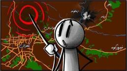

اگر زلزلهٔ بزرگ تهران بیاید چه میشود؟

فقط ۵۷ ثانیه. همین قدر زمان کافی بود تا زلزلهٔ بم ۴۳ هزار نفر را به کام مرگ بکشاند. یک دقیقه که حتی برای دم کردن یک چای زمان کمی است، ولی برای نابودی یک شهر کافی است. حالا تصور کنید همین اتفاق نه برای یک شهر کوچک، بلکه برای پایتخت ۹ میلیونی ایران، با ۴ میلیون جمعیت شناور، که مجموعاً بیش از ۱۳ میلیون نفرند، شاید درست وقتی که شما مشغول تماشای همین حرفها هستید، اتفاق بیفتد.
میدانستید تهران روی ۱۳ تا گسل فعال نشسته؟ انگار ۱۳ میلیون نفر روی ۱۳ تا بمب ساعتی زندگی میکنند و اکثرشان حتی نمیدانند اسم این گسلها چیست. مهمترینشان گسل شمال تهران، گسل مشا، گسل ری، گسل کهریزک. اسمهایی که ممکن است یک روز در کتابهای تاریخ با حروف سیاه نوشته شوند. بیایید با هم، نه به عنوان یک قصهٔ ترسناک شبانه، بلکه بر اساس مطالعات علمی ببینیم اگر یکی از این غولهای خفته بیدار شود چه اتفاقی میافتد. سه سناریو را با هم بررسی میکنیم.
سناریوی یک: زلزلهٔ خفیف
چندین هفته پیش دقیقاً یک زلزله اطراف تهران آمد که کرج و تهران لرزید، ولی کمتر از ۵ ریشتر بود. فرض کنید یک زلزلهٔ پنجونیم ریشتری از یکی از گسلهای اطراف شهر، مثلاً گسل مشا. در این سناریو زمین میلرزد، اما خیلی شدید نیست. چراغها تکان میخورند و شاید چند ظرف از کابینت بیفتد. ساختمانهای قدیمی اطراف بازار یا میدان راهآهن ممکن است ترکهای سطحی بردارند، اما ساختمانهای استاندارد و نسبتاً نوساز تقریباً سالم میمانند. البته اگر واقعاً استاندارد ساخته شده باشند، نه اینکه فقط اسمش استاندارد باشد.
میدانستید طبق آمار فقط حدود ۳۰ درصد ساختمانهای تهران در برابر زلزلههای متوسط مقاوماند؟ یعنی حتی همین زلزلهٔ کوچک میتواند بعضی محلهها را با مشکل جدی روبهرو کند. تلفات این سناریو خوشبختانه خیلی کم است. شاید چند نفر در اثر افتادن اشیا یا سکتهٔ قلبی در لحظهٔ وحشت مصدوم شوند، یا حتی فوت کنند. هرچند همین چند نفر هم برای خانوادههایشان یک فاجعه است.
متروی تهران چطور؟ مثل یک کرم بزرگ زیرزمینی زیر تهران جا خوش کرده. مترو هم احتمالاً دچار مشکلات موقت میشود و چند ساعتی از کار میافتد. برق هم قطعیهای پراکنده دارد. اما بیشتر محلهها همان شب دوباره به حالت عادی برمیگردند. این زلزلهٔ کوچک، بچهبازی است در مقابل سناریوهای بعدی.
سناریوی دو: زلزلهٔ متوسط
حالا تصور کنید زلزلهای ششونیم ریشتری از گسل ری در جنوب تهران بیاید. سر وقتمان زیاد از این مقایسه خوشم نمیآید، ولی بگذارید بگویم: زلزلهٔ بم ۶٫۶ ریشتر بود که بیش از ۴۰ هزار نفر را کشت. بافت و نوع ساختمانهای بم خیلی متفاوت بود با تهران الان، ولی متأسفانه ساختمان فرسوده خیلی داریم. همین قدرت را زیر پای شهری با جمعیت ۱۰ تا ۱۵ برابر، و ساختمانهای آجری و بتنی بلند تصور کنید.
به نظرت ۱۵ ثانیه زمان کمی است؟ دستتان را بگذارید روی قلبتان و آرام بشمارید. یک، دو، سه، چهار، پنج، تا ۱۵. آره، زمان زلزله اینطوری است و حتی باور کن کندتر میگذرد. ۱۵ ثانیهای که تمام نمیشود. در همین زمان به ظاهر کوتاه، سرنوشت صدها هزار نفر تغییر میکند. ساختمانهای فرسوده مثل برگ پاییزی میریزند. بافتهای قدیمی مرکز و جنوب تهران مثل مهرههای دومینو یکی پس از دیگری فرو میریزند. بافت فرسودهٔ تهران حدود ۴۵۰۰ هکتار وسعت دارد و دو و نیم میلیون نفر در آن زندگی میکنند. اینها درست همان نقطههاییاند که مثل کاغذ مچاله میشوند.
تلفات در این سناریو ممکن است به چندین هزار نفر برسد. بیمارستانهای شهر مملو از مجروحان میشوند. اگر زلزله شب رخ بدهد، آمار تلفات بالاتر هم میرود، چون اکثر مردم خانهاند و فرصت فرار ندارند. سیستمهای حیاتی شهر چطور؟ شبکهٔ برق، آب و گاز آسیب جدی میبینند. پلهای بزرگ مثل پل صدر یا نواب، بسته به کیفیت ساخت، ممکن است آسیب ببینند یا حتی بریزند و ترافیک وحشتناکی ایجاد کنند. حالا تصور کنید بزرگراه همت و صدر، که همیشه ترافیک است، با چند ماشین چپشده و آسفالت ترکخورده چه منظرهای میشود.
یکی از متخصصان زلزله میگوید گسل ری، به خاطر مجاورت با بافت فرسوده، با وجود بزرگای کمتر از گسل شمال، میتواند تلفات بیشتری داشته باشد. مؤسسهٔ جایکا ژاپن محاسبه کرده که در یک زلزلهٔ حدود ۶٫۷ ریشتری گسل ری، حدود ۱۳۰ هزار ساختمان آسیب میبینند و بین ۳۳ تا ۸۳ هزار نفر کشته خواهند شد. این سناریو واقعاً شوخی ندارد. ۸۳ هزار نفر جمعیت خیلی زیادی است.
سناریوی سه: زلزلهٔ شدید
در نهایت سناریوی کابوسواری که امیدواریم هیچوقت رنگ واقعیت نبیند. زلزلهٔ ۷٫۲ ریشتری یا بیشتر، از گسل شمال تهران. زلزلهای که سال ۲۰۱۱ ژاپن را لرزاند ۹ ریشتری بود. این را بدانید که هر یک و دو دهم واحد افزایش در مقیاس ریشتر، یعنی حدود ۱۰ برابر دامنهٔ بیشتر. زلزلهٔ ۷٫۲ ریشتری تهران خیلی قویتر از یک زلزلهٔ ۵ ریشتری است. خب چرا ژاپن در برابر زمینلرزهها نابود نشد؟ چون ژاپن از گذشته با زلزله دستوپنجه نرم کرده و هر ساله خودش را برای چنین سناریوهایی آماده میکند. هم آموزش مردم و فرهنگسازی، هم مقاومت سازهها. ولی زلزلهٔ ۷٫۲ ریشتری برای تهران حکم آخرالزمان را دارد. اینجا دیگر زمین واقعاً دهن باز میکند.
تصور کنید ۳۰ ثانیه لرزش شدید. چنان لرزشی که ایستادن روی پا تقریباً غیرممکن است. ساختمانهای بلند مثل درختها خم میشوند و بعضیهایشان نمیتوانند برگردند به حالت قبلی. اینجاست که حتی آن ساختمانهای باکیفیت تهران هم به چالش کشیده میشوند. همهٔ ساختمانهای فرسوده فرو میریزند و مناطق وسیعی از شهر به ویرانه تبدیل میشوند. پدیدهٔ روانگرایی خاک در بعضی مناطق باعث میشود زمین مثل مایع رفتار کند و ساختمانها در زمین فرو بروند. میدانستید بخشهای جنوب تهران روی خاک رسوبی نرم ساخته شده که دقیقاً مستعد روانگرایی است؟ اینجا زمین دهن باز میکند و ساختمانها را قورت میدهد.
پلها و ساختمانها فرو میریزند. بزرگراهها مسدود میشوند. امدادرسانی تقریباً غیرممکن میشود، چون خود راههای امدادی مسدود شدهاند. آتشسوزیهای گستردهای در اثر نشت گاز رخ میدهد و با خطوط آب قطعشده، خاموش کردن بسیار دشوار است. آمار تلفات وحشتناک است. تحقیقات نشان میدهد در زلزلهٔ ۷٫۲ ریشتری گسل شمال تهران، بین ۱۲۰ تا ۵۰۰ هزار نفر ممکن است جانشان را از دست بدهند. برای ملموس کردن فاجعه، این میشود دهها برابر قربانیان زلزلهٔ بم، در چند دقیقه. یعنی چند تا ورزشگاه آزادی پر از کسانی که دیگر نیستند. یعنی خیلی از تهرانیها حداقل یک عزیز را از دست دادهاند. یک فاجعهٔ ملی در ابعادی که تاریخ ایران کمتر به خودش دیده.
بعد از زلزله، نبود آب آشامیدنی، سرپناه، و بیماریهای واگیر ناشی از تجمع زباله، بحران را تشدید میکند. بحرانهای ثانویه مثل اختلال روانی، ناامنی و آشوب اجتماعی میتواند تا ماهها ادامه پیدا کند. سدها چه میشوند؟ تصور کنید سد لتیان و لار، که آب تهران را تأمین میکنند، آسیب ببینند. این یعنی هم خطر سیل، هم قطع منابع آب پایتخت.
یک چیزی بگویم، خودتان تا ته قضیه را بروید. میدانستید پناهگاههای تهران ظرفیت اسکان اضطراری حدود ۱۲۰ هزار نفر را دارند؟ بیایید واقعبین باشیم. نمیشود گفت زلزله نمیآید، چون میآید. این یک واقعیت زمینشناسی است. زمین حرکت میکند. گسلها جابهجا میشوند و انرژی آزاد میکنند. جالب است بدانید دورهٔ بازگشت زلزلههای بزرگ در منطقهٔ تهران ۱۵۰ تا ۲۰۰ سال تخمین زده میشود و آخرین زلزلهٔ بزرگ حدود ۱۸۰ سال پیش بوده. حالا سؤال مهم این است: الان ما کجای این چرخه هستیم؟ درست وسط منطقهٔ خطر. انگار سوار یک ترن هوایی شدهایم که دارد به اوج خودش نزدیک میشود.
برای آمادگی چه کار کنیم؟
خوشبختانه هلال احمر ایران و سازمان مدیریت بحران در سالهای اخیر برنامههای زیادی برای آمادگی شهروندان تدارک دیدهاند. تمرینهای سالانهٔ زلزله در مدارس، آموزش پناه گرفتن درست، تهیهٔ کیف اضطراری، و دانستن محلهای امن در خانه و محله، همه میتوانند جان انسانها را نجات بدهند. مهمتر از همه، بازسازی و مقاومسازی ساختمانهاست. وقتی کارشناسها میگویند حدود ۸۰ درصد تلفات زلزله به دلیل فرو ریختن ساختمان است، نه خود زلزله، یعنی با ساختوساز اصولی میشود این رقم را به شدت کاهش داد.
همانطور که گفتم، ژاپن هم روی کمربند زلزله قرار دارد. اما در زلزلهٔ ۲۰۱۱ که ۹ ریشتری بود، تلفات ناشی از خود زلزله، نه سونامی بعدش، نسبتاً کم بود، چون ساختمانهایشان استاندارد است. پس میشود با زلزله زندگی کرد، اما باید هوشمندانه باشد. استانها و شهرهای معین، مازندران، سمنان، قم، قزوین و مرکزی، برنامهریزی کردهاند که در صورت وقوع زلزله در تهران به کمک بیایند. انبارهای اضطراری در اطراف شهر ساخته شده و مانورهای بزرگ امداد و نجات هر ساله برگزار میشود. اما سؤال اینجاست: آیا این تمهیدات کافی است؟
تهران روی بمب ساعتی زلزله نشسته، متأسفانه. اما زندگی در جریان است. هر روز صبح میلیونها نفر بیدار میشوند، صبحانه میخورند و میروند سر کار. بچهها مدرسه میروند، والدین به فکر آیندهٔ بچههایشان هستند، و زندگی با تمام فراز و نشیبش ادامه دارد. بهترین کاری که میتوانید انجام بدهید این است که آگاه باشید در صورت وقوع زلزله باید چه کار کنید. آموزههایتان را به خاطر بیاورید و به صورت بازی با بچهها تمرین کنید، تا اگر خداینکرده روزی اتفاق افتاد بتوانید خودتان را نجات بدهید. تا فکر بعدی، کنجکاو بمان.